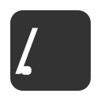
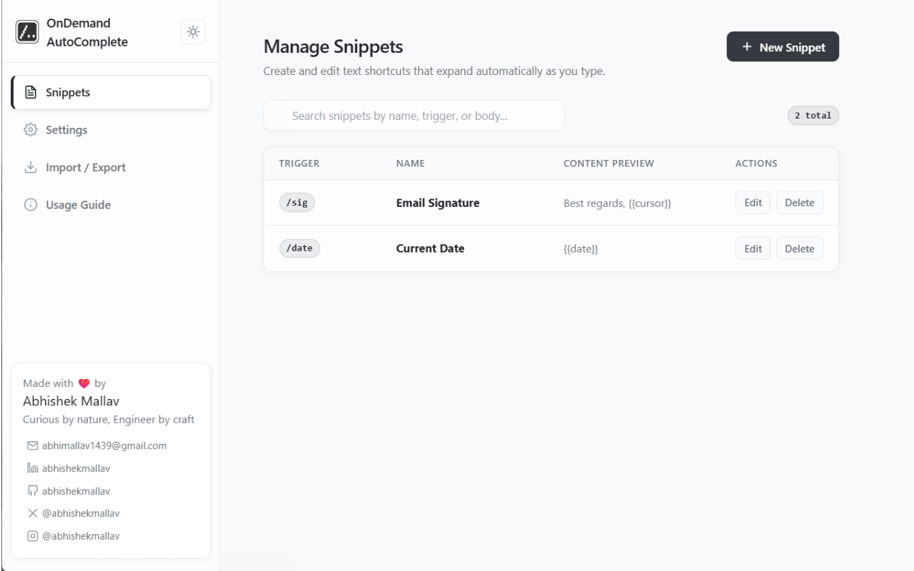
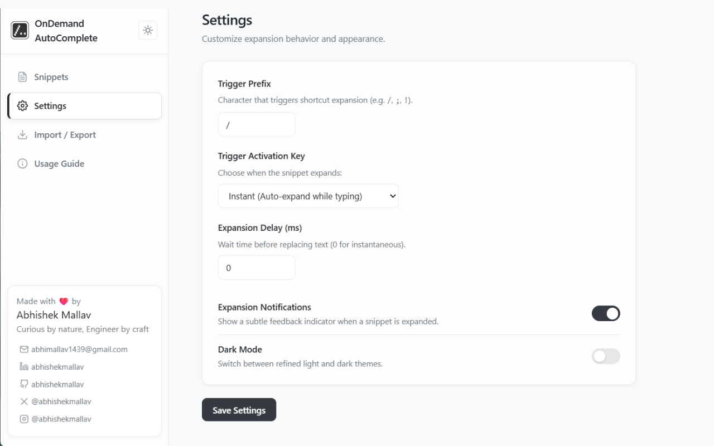
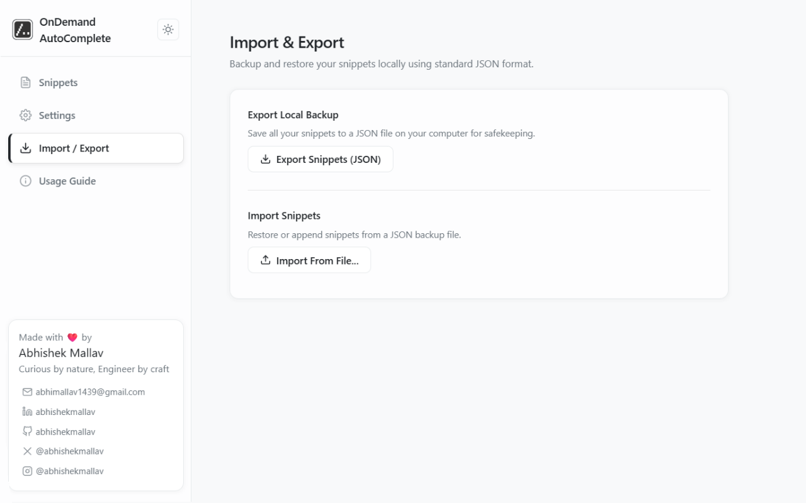
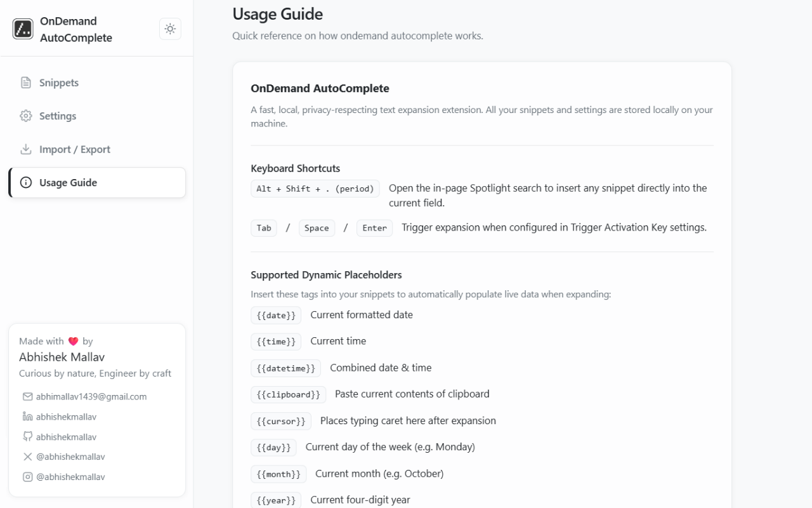
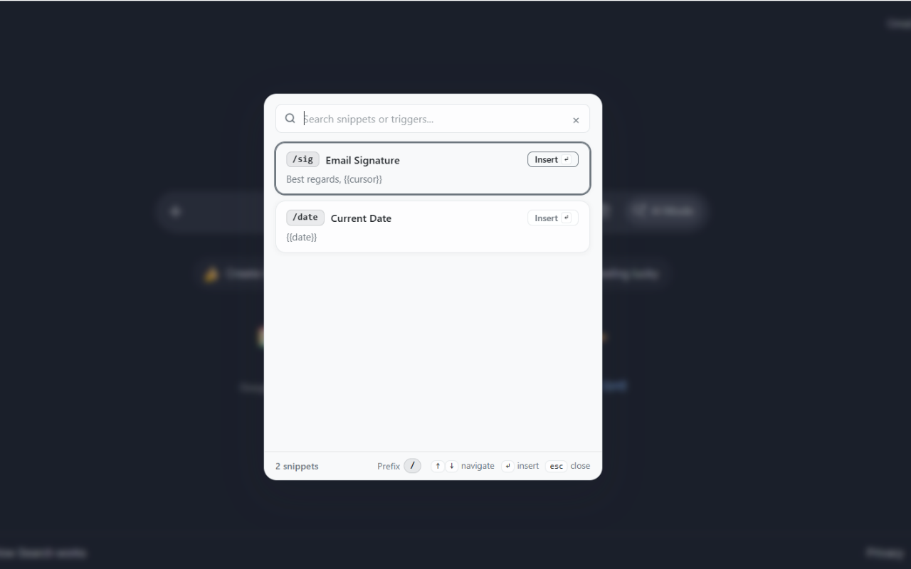

Words on demand
Expand a trigger like /sig into a signature, a reply, or an entire template in supported text
fields and editable areas.

OnDemandAutoCompleteA little shortcut. A lot of possibility.
Your everyday words, just a few keystrokes away. Turn repetitive typing into personal shortcuts with OnDemand AutoComplete.
Local storage. No telemetry. Open source.
TO Your next great collaborator
Hi there,
Thanks for reaching out.
Let’s make something thoughtful.
/sig01 / WHAT IT DOES
Save the things you type again and again. Bring them back exactly when you need them.
Expand a trigger like /sig into a signature, a reply, or an entire template in supported text
fields and editable areas.
Open the searchable snippet picker with Alt + Shift + .. Navigate with arrow keys, insert with Enter or Tab, and close with Esc.
Insert live dates, times, and clipboard text. Use a cursor placeholder to land exactly where your next thought begins.
Snippets and settings stay in your browser’s local storage. No account, telemetry, or third-party server needed.
Create, edit, and delete named snippets. Search by name, trigger, or content, and copy a snippet straight from the toolbar popup.
Choose a custom prefix and expand instantly or with Tab, Space, or Enter. Set an expansion delay and toggle feedback notifications.
Switch between light and dark themes across the popup, settings, and in-page picker. Keep your tools comfortable.
Export your snippets as a JSON backup. Restore or append snippets from a file whenever you need them.
02 / A LOOK INSIDE
A focused library, a picker right where you work, and settings that put you in control. These are screenshots of the extension itself.





03 / A PERSONAL TOUCH
Let placeholders fill in the changing parts of your templates, so you can focus on the part that needs you.
{{date}}{{time}}{{datetime}}{{day}} {{month}} {{year}}{{clipboard}}{{cursor}}A LITTLE LESS TYPING STARTS HERE
Meet your new everyday shortcut.
chrome://extensions and enable Developer mode.manifest.json.Chrome restricts extensions on internal pages and the Chrome Web Store. Some custom website editors may not support expansion.